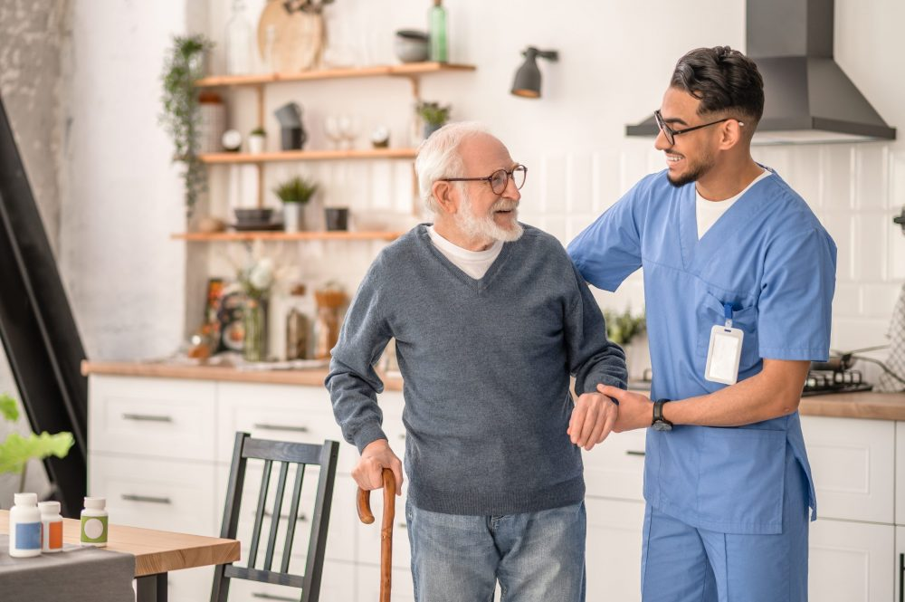
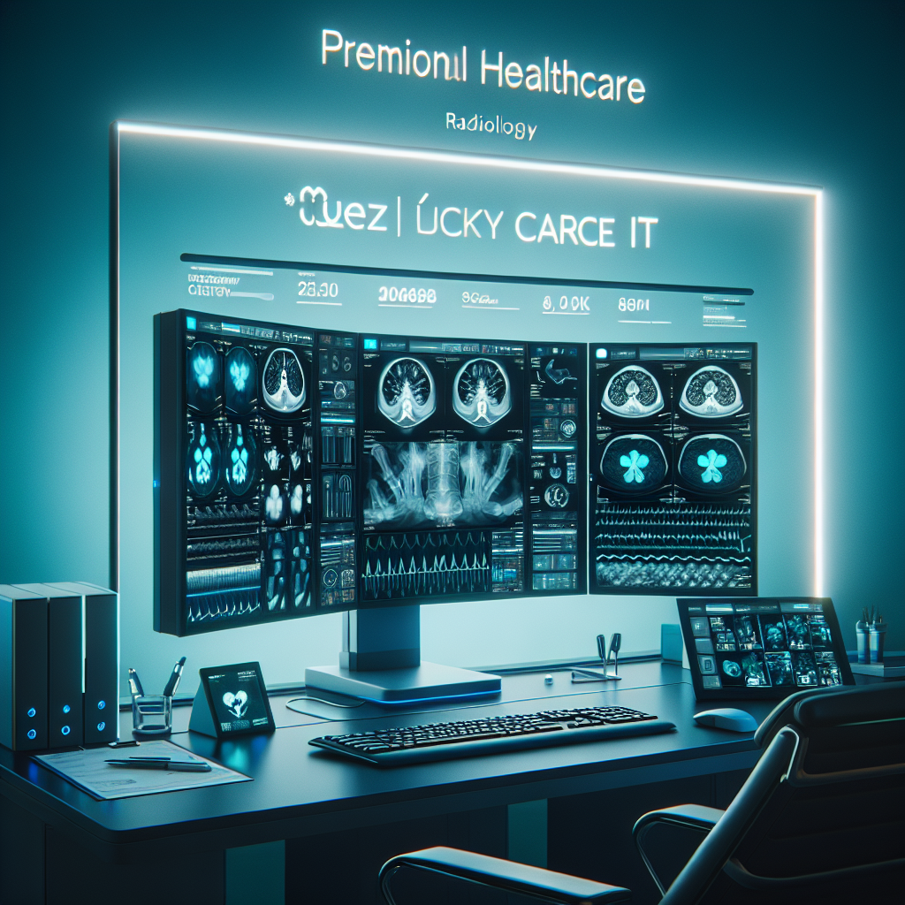

ÖZN LuckyCare
Sektör
Evde Yaşlı Bakım + Medikal Danışmanlık
Uzaktan takip · klinik kayıt · bakım planı · sağlık danışmanlığı
Alanlar
Bakım ve medikal danışmanlık süreçlerini tek merkezde yönetiyoruz. Evde bakım operasyonu, klinik veri takibi ve sağlık profesyonelleriyle koordinasyon aynı sistem üzerinden ilerler.
- Evde yaşlı bakım: düşme/hareket bildirimi, ilaç-randevu hatırlatma, uzaktan sağlık bağlantısı
- Medikal danışmanlık: dijital hasta dosyası, cihaz-yazılım doğrulama, KVKK ve raporlama
- Bakım + medikal entegrasyonu: günlük takip, olay yönetimi, karar destek ve sürekli izleme
Evde / Yaşlı Bakım Katmanı
- Düşme ve hareket bildirimi
- İlaç ve randevu hatırlatma
- Uzaktan sağlık bağlantısı
Medikal Danışmanlık Katmanı
- Dijital hasta dosyası yönetimi
- Cihaz ve yazılım doğrulama
- KVKK uyumu, süreç takibi ve raporlama
Videolar
Görsel galeri

